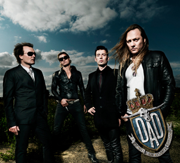
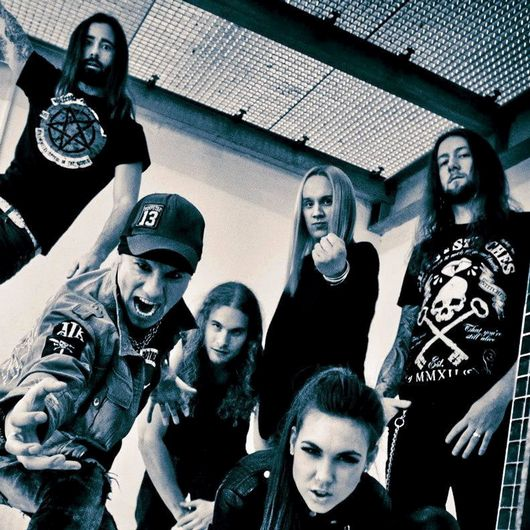

-

D-A-D
Bandet bildades i Köpenhamn, Danmark 1982 under namnet Disneyland After Dark...
-

Amaranthe
Amaranthe är ett svensk-danskt power-melodisk death metal-band med inslag av electronica
-

Nicke Borg Homeland
Men två årtionden av hårt liv och hårt turnerande med en av Sveriges främsta hårdrocksband